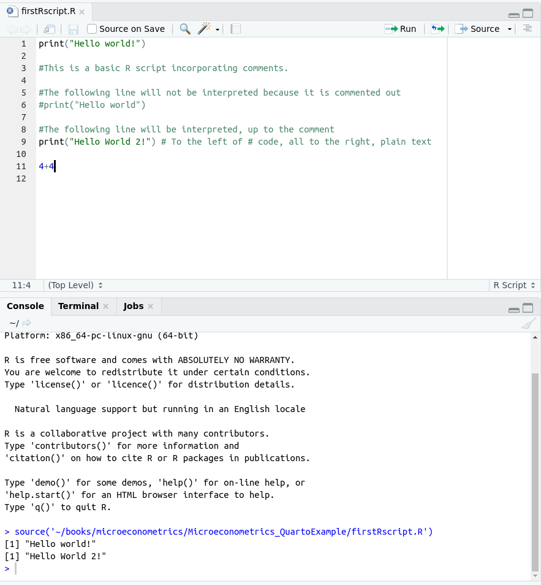
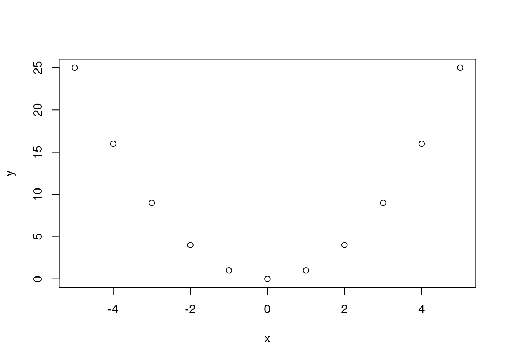
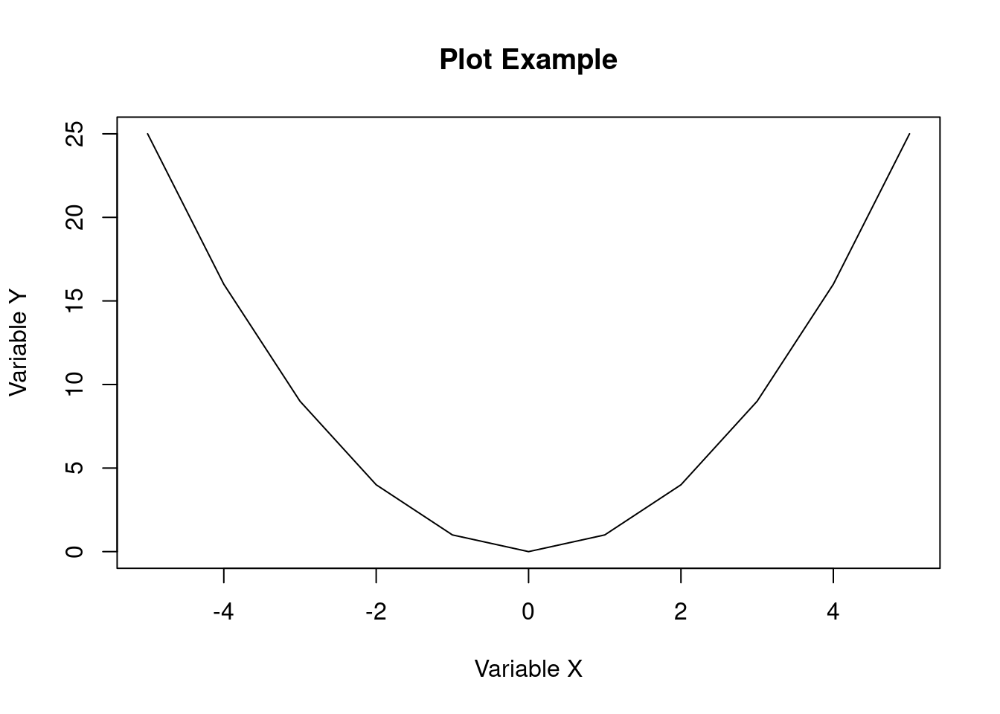
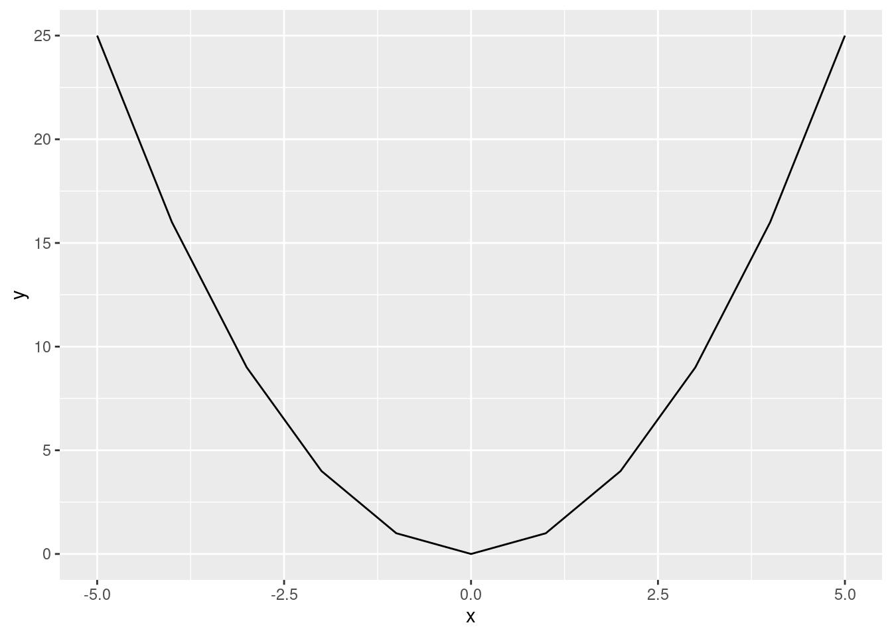
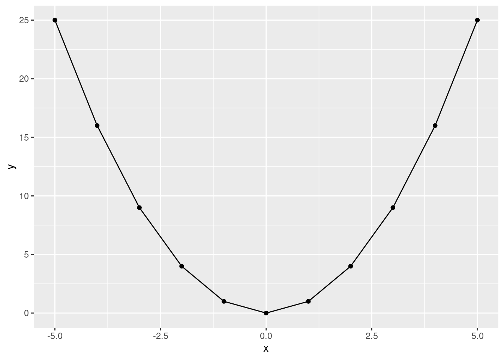
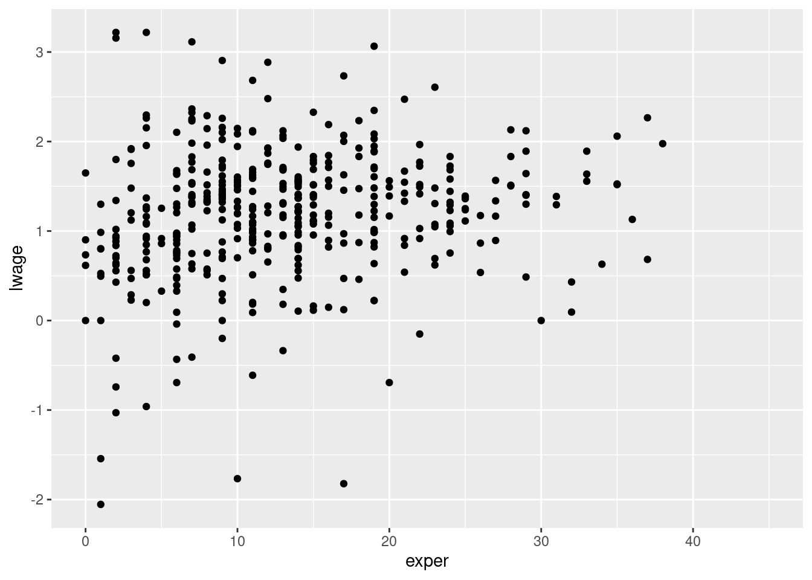
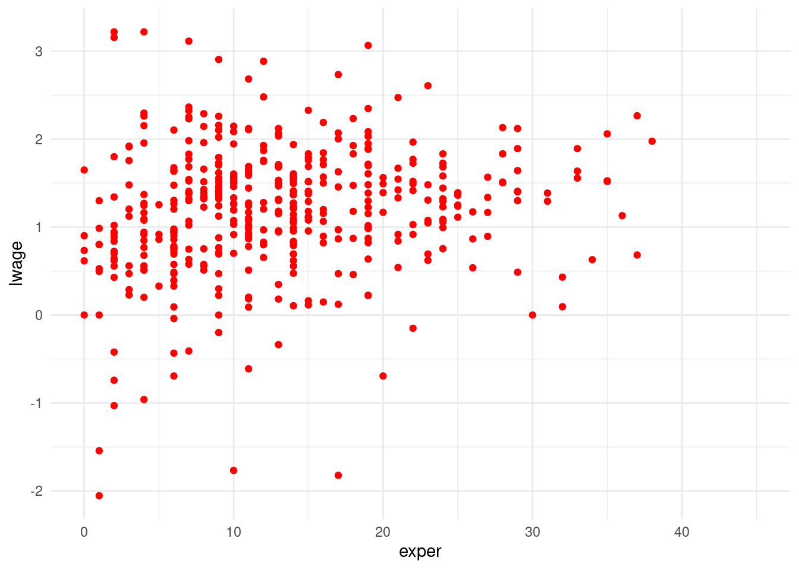
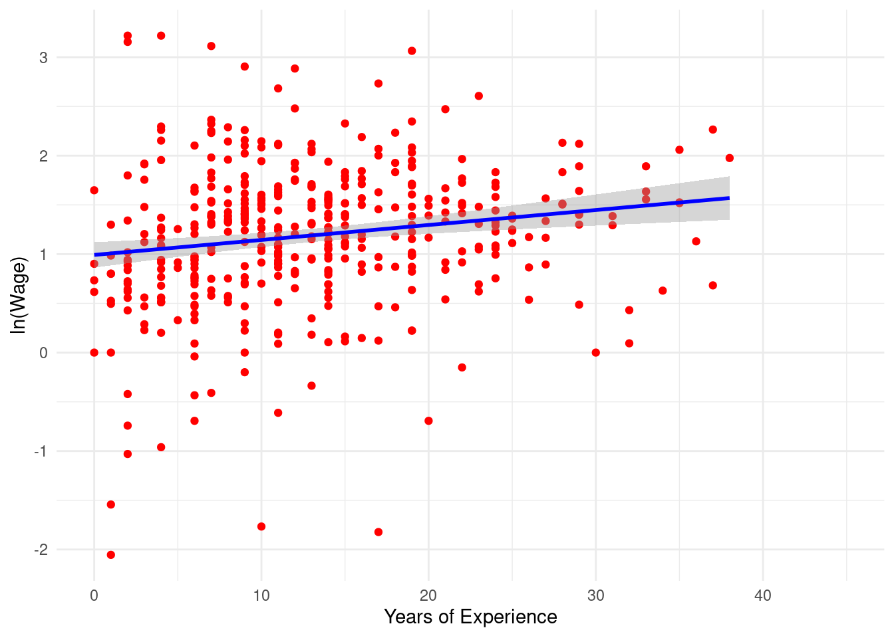
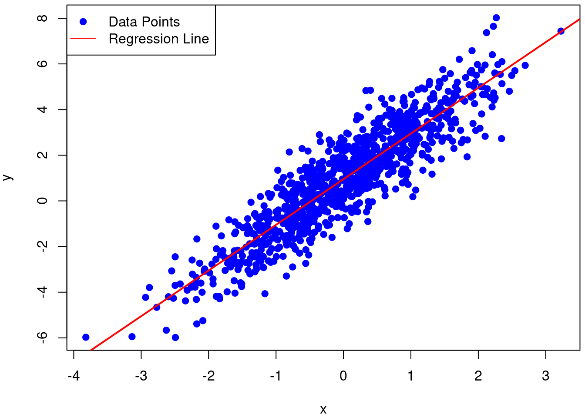
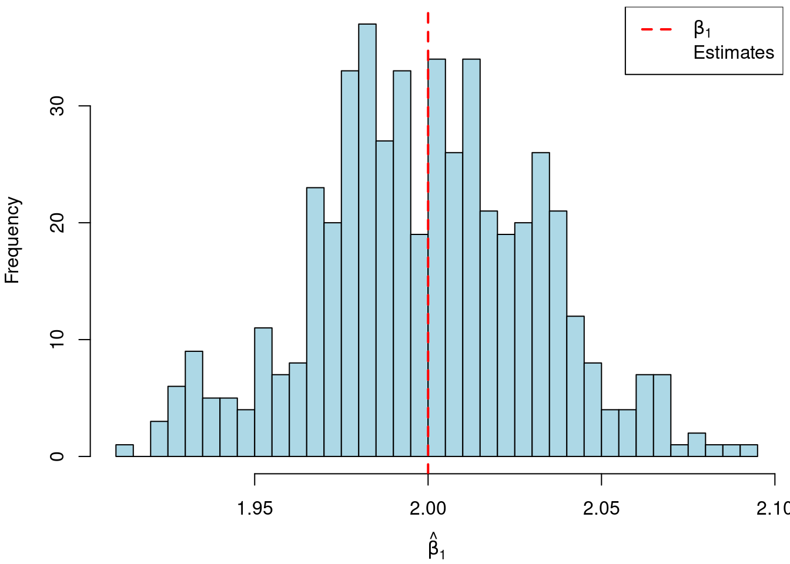

R An Introduction to R
Preliminaries
We will assume that when you are reading this you have downloaded R and have been able to access R in some way. This may be via the command line, but most likely we imagine you will have some GUI which allows you to see a number of windows including a space for graphical output, a description of the contents of your R Environment (for example any data you have loaded), potentially a place to write your code in R, and, most importantly, a “shell”, or R interface, which looks like the following:
R version 4.1.2 (2021-11-01) -- "Bird Hippie"
Copyright (C) 2021 The R Foundation for Statistical Computing
Platform: x86_64-pc-linux-gnu (64-bit)
R is free software and comes with ABSOLUTELY NO WARRANTY.
You are welcome to redistribute it under certain conditions.
Type 'license()' or 'licence()' for distribution details.
Natural language support but running in an English locale
R is a collaborative project with many contributors.
Type 'contributors()' for more information and
'citation()' on how to cite R or R packages in publications.
Type 'demo()' for some demos, 'help()' for on-line help, or
'help.start()' for an HTML browser interface to help.
Type 'q()' to quit R.
>Here, R code can be entered directly following a prompt which is the > symbol at the bottom of the window above. From the moment you open R you are in an R session until the moment you close it, from now on understand a session as this time between you open and close R. The most simple way to execute code in Ris to simply input commands into your R console. So, for example, you could write the following at to the right of the > symbol, and R will evaluate this code:
4 + 4[1] 8As you can see, R has understood the instruction that you want to add 4 plus 4 and show the result, which is evaluated, and output directly below the code in the R console. Later in this chapter we will properly explain these mathematical operations and the different R data types. Beyond evaluating such simple mathematical operations, R has a host of in-built functions which can be invoked at the command line. While we will interact with this in more detail later, a simple example is the following, which you can type in your R console:
getwd()[1] "/home/dcc213/books/microeconometrics/site"This function which can be understood as “get working directory” will show you the path on your computer where R is currently working. Thus, any files saved will be exported there, and R will search for any thing to import from this directory. If you want to change this directory you must use the function setwd("Path/to/the/directory/you/want/to/use") with the path written between " " or ' ' in order to R understand that is a character, again a topic that will be seen deeper latter. It is important to note that paths should be separated with the slash character: / rather than the backlash \, and this will work on any operating system. Indeed, if you try to set directories with a backslash, you will see that R returns an error.
We will return to discuss functions in more detail a bit later on. For now you will note that we have simply been typing instructions to R directly into the console, and R has been providing us with output. Generally, we will not work this way in an empirical research project, as we will want to develop code over time, and be able to return to R and replicate code in the future. For this reason, generally we will work in R scripts, or files named as something.R (where something will be logical name for the file). We will use these scripts to store the commands which we require for particular processes or routines, and can then save them to the disk of our computer before running them in R. These scripts can be generated in any type of text editor, and then can be run in R using the source() command. For example, below, you can see a screenshot of a sessin on R Studio where we have a basic R script named firstRscript.R, and below this, in the R console we see that the script is run using source and output is provided.

You may notice something strange about the code and the output in the R console. The R script has 7 distinct lines of text, but the console only produces two lines of output. The reason for this is because we have included comments, or messages for human eyes, but not for the computer to interpret. Any time that the # character is included in code, R understands that this is a comment, and hence is ignored in executing the code. So, for example, when we write:
print("Hello World!")[1] "Hello World!"in our code, the R console correctly echoes Hello World! back at us. However, if we enter precisely the same code, but begin the line with a comment symbol, R will not do anything given that it interprets everythin to the right of # as plain text which should be ignored:
# print("Hello World")Similarly, comments can be used within lines:
print("Hello World") # To the left of # code, all to the right, plain text[1] "Hello World"As you can, this lines has executed the instruction to the left of # but ignores all those to the right. It is good practice to comment code extensively, both for sharing code with other users, but also for sharing code with yourself in the future, where you may not remember precisely what you were thinking when you originally wrote your code!
One final thing to note from this R script is that the output from the final line of code (4+4) was not printed in the console. In R, when you type 4+4 at the command line, you get immediate output because R is operating in an interactive mode. In interactive mode, R evaluates expressions as soon as you enter them and displays the result to the console. However, when you write 4+4 in a script and then run the script, there is no automatic output to the console. However, it is important to note that the calculation is conducted. You can confirm this yourself if you’d like by explicitly requesting that Rprovide this output when it runs the code, replacing 4+4 in the code with print(4+4).
An introduction to the language and data types
Until now we have executed some code in R and seem some specific functions which print output, but we have never stored any results for later use within our code. Generally we will want to store the output of intermediate steps in our code for later use. This can be done in R using any of the following assignment symbols: ->, = or <- (though -> is generally preferred). For example, below we store a number of values as a variable which we define, arbitrarily named x:
x <- 1
x[1] 1x = 2
x[1] 23 -> xWith the use of -> or <- the arrows make clear that we are assigning some particular value (or values) to a named variable, where the named variable is indicated by the arrow head. However, with the use of = the assignment must respect name = value. If, instead, we try to assign some variable as value=name an error will occur:
4 = xError in 4 = x: invalid (do_set) left-hand side to assignmentThis error implies that the code has not been executed, and if we inspect the contents of x we will see that its prior value remains.
x[1] 3In general, a command can produce a number of conditions which contain important messages for us. These are:
Error: These kinds of messages tell you that something has gone wrong andRcouldn’t execute your code. Usually error messages include a brief explanation of what has gone wrong, to help you diagnose and fix your code. Any expected results from your command will not be assigned.Warning: These kinds of message indicate that somes has occurred that could potentially cause problems, but is not critical for code execution. In these cases,Rwill still execute the code and give the result, but warn you that not everything is in order and this may cause inaccurate results or future problems. At times this messages can be ignored without further issues, but warnings can also be a sign of peril, and so time should be taken to review warnings and understand whether they are problematic.Message: This kinds of messages simply provide information about the execution of your command, andRis providing you with some piece of information which is useful for you to know. This will not affect the output of your code, and does not generally indicate an error with your code.
Data Types
Text (String) Data
To get up and running with R, it is useful to understand the different ways which data can be stored. R can hold a number of different types of objects in its working memory, and it is important that R understands what type of information we are passing or storing. Among others, R allows for information to be stored as characters, numeric, arrays, data frames and lists. Different types of data allow different types of operations, and should be stored in different ways. Characters are perhaps the conceptually simplest type of data. Characters are simply strings of text, and should be specified between " ", or ' '. We have seen the use of characters when printing “Hello world” previously. If characters are not indicated between strings, R will understand that they refer to variable names. For example, returning to Hello World, if this is entered without quotes, an error will appear:
Hello WorldError: <text>:1:7: unexpected symbol
1: Hello World
^Indeed, if we look carefully at the error message we may see that the error has occurred when R arrives to World. This is because it assumes that Hello is a variable name, but this must be followed by some valid assignment. For example, had we written Hello<-"world" this would have been perfectly fine! Alternatively, if we do actually want to write this as characters, we can do so simply by enclosing the text in quotes:
"Hello World"[1] "Hello World"We can confirm that this is effectively understood to be character data by using the class() function. This function indicates the type of data of the argument it receives, as we can see below. Note also that if we generate some variable using the assignment operators discussed above, class() will return to us the type of data that the variable contains:
class("Hello World")[1] "character"my_var <- "Hello World"
class(my_var)[1] "character"Numeric Data
Numeric data is entered without any special behaviour, simply writing the number in the case of scalar values. Indeed, if numeric data is accidentally enclosed between quotes, it will be treated as character, and not numeric data. For example, below we assign two variables based on the number 2 and confirm that one is numeric while the other is viewed as a character.
num1<-2
num2<-"2"
class(num1)[1] "numeric"class(num2)[1] "character"If you try to perform numerical operations based on the above variables (more on this below), you will see that num1 can be involved in such calculations, while num2 cannot.
Vectors and Arrays
Generally, we will be dealing with more than a single number in our work, and for this reason need ways to collect groups of numbers. Vectors and arrays (or matrices) provide some ways to do this. An easy way to create vectors or arrays is via the c() function, which stands for “combine”. This allows for numbers to be combined in a vector. For example,
c(1,2)[1] 1 2This is required to group numbers. If we simply write a series of numbers without wrapping them in the c function, error will occur:
1 2 Error: <text>:1:3: unexpected numeric constant
1: 1 2
^1,2Error: <text>:1:2: unexpected ','
1: 1,
^A precaution to note here is related to mixing of data types in objects that combine different elements because different data types will influence the way this combination works. For example vectors will coerce all data to the most restrictive data type, if you mix characters with numbers in a vector, R will coerce the vector type to a character:
class(c(1,2))[1] "numeric"class(c(1,"2"))[1] "character"This behaviour can be overruled using as. which allows for specific data types to be indicated. For example, if we take the previous vector of a number and a character, we can ensure that the result is numerica as follows:
as.numeric(c(1,"2"))[1] 1 2However, note that this does has limits if the underlying object cannot be converted to that data type!
as.numeric(c(1,"A"))Warning: NAs introduced by coercion[1] 1 NAIn the above, the inclusion of a string which cannot be logically converted to a number implies that R has issued a warning and converted this element to NA. NA is R’s “Not available” or missing value indentifier. We will discuss a bit later on about how to deal with this in your programming.
You can also create arrays with the matrix function, this allows you to get objects in two dimensiones, rows and columns
matrix(c(1,2,3,4), nrow = 2) [,1] [,2]
[1,] 1 3
[2,] 2 4It is worth noting a couple of potentially important details with these matrices. A first point which we already have come across is related to coercion of types. For example, if passing a vector via the matrix command, R will coerce the matrix to the more restrictive data type:
matrix(c(1,2,3,"4"), nrow = 2) [,1] [,2]
[1,] "1" "3"
[2,] "2" "4" A second, potentially more surprising behaviour is the “recycling” of values if matrices are not of the correct length. For example, as you can see below, if we add a 5th element to the vector, this can no longer correctly fit in two rows. So R’s default behaviour is to begin “recycling” values from the beginning until the matrix is full, and so it returns to the first element of the vector and fills in the “missing” cell. If, however, you actually want this to be an NA value, you need to instruct R about this, as in the second case below.
matrix(c(1,2,3,4,5), nrow = 2) [,1] [,2] [,3]
[1,] 1 3 5
[2,] 2 4 1matrix(c(1,2,3,4,5,NA), nrow = 2) [,1] [,2] [,3]
[1,] 1 3 5
[2,] 2 4 NAData frames
Likely the type of object which we will be working with the most in our analysis in R are data frames. Data frames allow us to mix mutliple other types of data, viewing the collection of variables and observations as a database with multiple rows and columns. Within data frames, we can easily subset to certain rows (observations), columns (variables), and conduct univariate and multivariate analysis. It will likely be the starting point for much of your work when you import a standard dataset into R. As an example we create a data frame named df that will use later in other examples:
df <- data.frame(A = c(1, 2, 3), B = c(4, 5, 6),
C = c("XXX", "YYY", "ZZZ"))
df A B C
1 1 4 XXX
2 2 5 YYY
3 3 6 ZZZAs we have entered the data frame, we have three columns named “A”, “B” and “C”. Each column consists of three observations, and when the data frame is printed, we see that R has helpfully assigned observation numbers in the left-most side of the data frame. Shortly we will see more about how to manipulate and work with data frames.
The last data type we will briefly introduce in this section are lists. Lists allow us a very flexible way to group things together, allowing us to store any data type we need. For example, as we see below in a single object we are combining characters, numbers and a data frame, all in a single “container” called a list. The flexibility of lists to contain many data types is why many functions that we will work with later on return their results as lists or as objects created from lists. As in data frames, in lists, each element is given its own name, and when printed are referred to by this name:
l <- list(Character = c("Hello", "World"),
Number = c(1, 2, 3, 4),
DataFrame = df)
l$Character
[1] "Hello" "World"
$Number
[1] 1 2 3 4
$DataFrame
A B C
1 1 4 XXX
2 2 5 YYY
3 3 6 ZZZSubsetting Multidimensional Elements
As we saw in data frames and lists, often we will work with objects that store multiple elements. Sometimes we may want to work with a subset of this multidimensional data instead the entire object. In data frames, or lists, you can easily access an entire column, or element, by using $ followed by the column, or object, name:
df$A[1] 1 2 3l$Character[1] "Hello" "World"But sometimes you may want to access more, or less, than one entire column or object, so the more general way to access to the elements are with the use of [ ] to subset. For one dimensional objects like vectors or a column of a data frame, we can access elements by using the number of the element position between [ ]. For example, for a column “A” in our data frame:
df$A[1][1] 1Identical nomenclature is used for vectors.
This syntax work to access more than a single object by combining it with a vector, for example as follows to access the first and third element of df$A:
df$A[c(1, 3)][1] 1 3In the case of multidimensional elements such as an entire data frame or array you should use the [row,column] syntax to control subsetting. If you would like to access an entire row, this can be requested by just leaving the row position blank:
df[,1][1] 1 2 3with the same logic holding to access an entire column:
df[1,] A B C
1 1 4 XXXSimilarly, all of the above can be mixed to grab multiple rows or columns.
df[2,2][1] 5df[c(1,3), 2][1] 4 6In lists the syntax is slightly different given the way that lists are internally stored. In this case, first you must access the object of interst with a double [ ] and then once you access the object it behaves in the same way that we saw above. For example, if we wanted to access the second row and second column of our data frame df stored in the list l, we can do so as follows, noting that the data frame is stored as the third item in the list:
l[[3]][2,2][1] 5Alternatively, between the first brackets you can also use the element’s name to select it for later processing. The following code exactly replicates the previous example, however arguably is less error prone, because it is clear precisely which elements we wish to select (“DataFrame” from the list, and column “B” from the data frame):
l[["DataFrame"]][2,"B"][1] 5Basic Operations
The standard mathematical operations in R likely work how you would expect. Basic mathematical operations are as follows, with an example of their use below:
| Symbol | Operation |
|---|---|
+ |
Addition |
- |
Subtraction |
* |
Multiplication |
/ |
Division |
** or ^ |
Power |
%% |
Modulus |
%/% |
Integer Division |
A few examples
10 + 3[1] 1310 - 3[1] 710 * 3[1] 3010 / 3[1] 3.33333310 ^ 3[1] 100010 ** 3[1] 100010 %% 3[1] 110 %/% 3[1] 3Also when you combine different operators it respects the PEMDAS order, first resolving Parentheses, second solve Exponents, third Multiplication and Division, fourth Addition and Substraction. Both multiplication and division, and addition and substraction are evaluated left to right, rather than sequentially by operation, so it is important to indicate to R explicitly what you need using parentheses in certain cases. For example in order to solve \[-\frac{5 + 3^{5-3}}{5\times 3}\] You should use the code
-(5+3^(5-3))/(5*3)[1] -0.9333333Specifically in the case of matrices, mathematical operations are assumed to refer to cell by cell calculations. If, instead, you would like to undertake matrix multiplication, this must be requested with %*%. For example, consider the two operations below and why they differ, also noting the t() is the matrix transpose operation.
a=matrix(c(1,2,3,4,5,6), nrow=2)
a*a [,1] [,2] [,3]
[1,] 1 9 25
[2,] 4 16 36a%*%t(a) [,1] [,2]
[1,] 35 44
[2,] 44 56R also has logical operatos that returns a boolean value (TRUE or FALSE, also abbreviated as T or F) pointing if the statement is true or false. This operators are:
| Symbol | Comparison |
|---|---|
== |
Equals |
!= |
Difference |
> |
Greater |
>= |
Greater or Equal |
< |
Less than |
<= |
Less than or Equal |
%in% |
If it is in |
| |
Or |
& |
And |
A few examples
4 == 3[1] FALSE4 != 3[1] TRUE4 > 3[1] TRUE4 >= 3[1] TRUE4 < 3[1] FALSE4 <= 3[1] FALSE4 %in% c(1,2,3,4)[1] TRUETRUE | FALSE[1] TRUETRUE & FALSE[1] FALSEThis boolean values are interpreted by R as the numbers 0 for F and 1 for T, characteristic that allows you work with them numerically and is useful when you want to check a series of conditions.
Functions
Beyond these logical and mathematical operators, R comes with a large suite of built in functions which perform specific tasks, as well as a large number of user-contributed functions (discussed below) which can extend the basic functionality. A basic installation of R comes with a range of packages. The functions included in R’s base package can be consulted by typing the following at your R console:
library(help="base")Functions are designed to perform specific tasks, potentially accepting input (known as “arguments”), and returning output which you can interact with. We have already seen a number of functions above such as getwd() which we used without arguments, and print() which we have used with specific arguments such as “Hello World!”. Arguments are simply the contents we provide the function inside the parentheses. Understanding how packages work, including the arguments they accept and the objects they return is key. This can be found by consulting the help file. If you know the function you wish to use, all these details can be found by typing help(function_name) or simply ?function_name. For example, if we type help(getwd) we will see a section entitled “Arguments” which explains to us the arguments the function accepts, as well as the elements returned under the heading “Value”. In certain cases if we are not sure exactly what function we need we can type ??search_term and R will advise us of any functions which may do what we’re after. For example, if we type ?? sum, we see a range of functions, including one called sum. We can then consult the help file to see if this is precisely what we are after. Reading the help file we see that the function “returns the sum of all the values present in its arguments”, and accepts numerical vectors. We can confirm that this is the case by applying this function to our data:
sum(df$A)[1] 6If you consult the help file to sum you will note quite prominently the option for “na.rm”, with the explanation Should missing values (including ‘NaN’) be removed?. You will also note that in the “Usage” section of the help file, “na.rm = FALSE” is explicitly indicated. Here we have encountered two particularly important elements: firstly, the concept of NA which we briefly mentioned above, and secondly the use of default options in functions. We will discuss these in turn. NA formally refers to Not available, or missing data. Similar concepts exist in other languages, such as NaN in Matlab, “.” in Stata, and so forth. Frequently we may encounter data where certain individuals have no information for certain variables. For example, we may have a data with some individuals who participate in the labour market and some who do not, where the hourly wage is a variable. For individuals who do not participate in the labour market, it probably makes most sense for their hourly wage to be recorded as NA. In R, these missing values can be recorded as NA. Functions must know how to deal with values which are recorded as NA. This is what sum does with its na.rm option. If na.rm = TRUE, values of NA will be removed prior to processing. Otherwise, vales of NA will remain in the data when processing. What’s more, the fact that in its “Usage” section the help file tells us na.rm = FALSE implies that FALSE is the default behaviour. Should we not say anything, R understands that as us accepting this default. To see how this works, we will define a vector x below with a missing value NA
x <- c(1, 2, NA)Now, if we use the sum function this will return to us an NA value, given that we can’t logically sum over a vector containing NA, because NA has no mathematical value:
sum(x)[1] NAHowever, if we explicitly tell R that we wish to remove the NAs prior to processing, it will, returning us the sum of the remaining two elements:
sum(x, na.rm = TRUE)[1] 3This behaviour ensures that we will know if our vectors contain NA, and in effect R makes us confirm to it that we are happy with this to return numerical values.
Along with the sum function, R comes with a considerable range of functions in the base environment, including functions to generate descriptive statistics, work with dates, conduct statistical modelling, amond many other things. These functions are sufficient to do nearly anything we will need to do, but are not necesarily optimal for all our tasks. As we will see now, there are a large number of useful functions and data types that don’t come with base R, but are avaialble as packages which be installed externally.
Managing packages
What are packages? Packages are a collection of functions, help files, and potentially data, which allow for the implementation of some group of procedures. These are add-on elements to R, which can significantly ease certain routines which are not a part of base R. In order to install a package you have several alternatives depending on how the package is distributed, though installing a package is a process which you only need to do once, and from then on this package will be avaialble to you should you wish to load it and use it. The majority of stable R packages are stored on the CRAN (the Comprehensive R Archive Network), which is a repository from which packages can be installed directly into your version of R. By far the most frequent way to install R packages is to install them from CRAN. This can be done quite simply, using the install.packages() function. This function accepts as an argument the name of the package you wish to install. For example, to install dplyr, a package we will work with beloe for data manipulation, you simply execute the following code:
install.packages("dplyr")Now that we have installed this package, it is available to you in the future and you don’t need to install it again unless you wish to update the package. However, that a package is installed doesn’t mean that R automatically loads the package (along with its functions and data types). You must instruct R in every session that you wish to use load the package. For example, if you want to use the function mutate which is a function available as part of the dplyr package that allows you generate new columns as functions of old columns in data, you cannot unless you first tell R that you wish to load dplyr. For example, below we try to conduct a valid operation with mutate without having loaded dplyr:
mutate(df, C = A + B)Error in mutate(df, C = A + B): could not find function "mutate"To avoid such errors, we must simply load the package with R’s library() function:
library(dplyr)
Attaching package: 'dplyr'The following objects are masked from 'package:stats':
filter, lagThe following objects are masked from 'package:base':
intersect, setdiff, setequal, unionNow if you want to use dplyr’s function mutate it will work
mutate(df, C = A + B) A B C
1 1 4 5
2 2 5 7
3 3 6 9To avoid unexpected errors, it is important to ensure that packages are correctly lodad each time you use R. Generally, the best practice is to simply load the packages that you require in the R script that you are working on, as then each time you run the script you will be sure that you have the correct packages loaded.
At first glance, it may seem like failing to load a package is not so serious, because R will not find the package and simply produce an error, which you can then remedy by loading the package. But this is not necessarily the case! At times, different packages may have functions named in exactly the same way, and if you fail to tell R you are using a particular package, it may find another function with the same name, that does not necessarily do the same thing. This can lead to considerable confusion, hence the importance of being careful with your loading of packages. As a matter of fact, this is something that we have seen when we loaded the dplyr package! If you note above, a Message was printed when we loaded dplyr to draw our attention to some functions which exist in dplyr, and also in base R. When we load a package, these pre-existing functions will be masked, implying that R will use the newly loaded functions, and not the masked versions. To see why this matters, consider the first message above: “The following objects are masked from ‘package:stats’:”. And note what happens when we use dplyr’s lag function:
df$A[1] 1 2 3lag(df$A)[1] NA 1 2In this case, we see it produces a vector which takes, for each observation, the observation one unit prior in the vector. However, we can also see what the function does with the stats package by using the syntax package::function, without first loading the package:
stats::lag(df$A)[1] 1 2 3
attr(,"tsp")
[1] 0 2 1Here, the same function produces a different result: namely for each observation it takes the mathematical value one below it. In many cases such clashes in function names will not occur, but we note the importance of this so that you can be cautious to always load the packages you need, and if in some strange case you do actually need two functions with the same name in different packages, that you have the knowledge that you can “unmask” functions by pre-empting the function name with the package name.
Loops and control-flow statements
Loops and control-flow statements allow us to control our code in a more precise way, and iterate through repetitive tasks. Looping constructs which are present in the majority of programming languages provide a mechanism to execute a set of instructions multiple times, contingent upon certain conditions. In R, there are a number of ways which loops can be set up.
The for Loop
In R, the for loop is commonly used to iterate over vectors, lists, or other objects which contain multiple elements which we can iterate over. the generic set-up of for loops is something akin to:
for(i in elements) {
do something to i
}Here elements is a list of items, and we use i (without loss of generality) to refer to a particular element. Within the brackets { } we indicate the potentially multiple lines of code we wish to run which interact with each i. Some real examples are provided below.
Iteration Over Data Structures
If we have data structures such as a list, we may wish to iterate over one element, and access another. For example, consider a ficticious dataset of student grades:
grades <- list(Alice = 85, Bob = 90, Charlie = 78, Diana = 92)
for (student in names(grades)) {
cat(student, "received a grade of", grades[[student]], ".\n")
}Alice received a grade of 85 .
Bob received a grade of 90 .
Charlie received a grade of 78 .
Diana received a grade of 92 .Here, we have simply iterated over each name in grades, and accessed the record within the loop. We could have also done this in a position-based way, and for this, sequences of numbers may be useful, as below.
The seq() Function
For tasks requiring iteration over a series of numbers, R’s seq() function is invaluable:
for (i in seq(3, 8)) {
cat("Processing data point:", i, "\n")
}Processing data point: 3
Processing data point: 4
Processing data point: 5
Processing data point: 6
Processing data point: 7
Processing data point: 8 In the above we have simply generated a sequence from 3 to 8, though depending on our particular needs, we could generate any other type of sequence, and subsequently interact with elements of the sequence within our loop.
The while Loop
An alternative type of loop is the while loop, which keeps executing statements so long as a particular condition remains true. Consider a scenario where we’re approximating the square root of a number using the Babylonian method. In this case, we can iterate onto a square root for some number \(p\) by taking an initial guess \(x\), and taking steps so that \(x_{new} = \frac{1}{2}(x+\frac{p}{x})\). When \(x\) and \(x_{new}\) converge, we have found our solution. We can do this with a while loop, asking our code to keep iterating so long as the difference between \(x_{new}\) and \(x\) is not very small:
number <- 81
guess <- number / 2 # Initial guess
difference <- 1
tolerance <- 0.01
while (difference > tolerance) {
new_guess <- 0.5 * (guess + number / guess)
difference <- abs(new_guess - guess)
guess <- new_guess
}
cat("Approximated square root:", round(guess, 2), "\n")Approximated square root: 9 Control Flow Mechanisms
There are a number of additional ways which we will encounter to control the flow of our code. A simple example is the if, else if, andelse` statements. These can be used independently, for example simply conducting a process if some condition is met:
condition <- TRUE
if (condition) {
print("the condition is true")
}[1] "the condition is true"where here, the fact that condition is true means that the statement in the if function will be evaluated. You can confirm to yourself that if condition is set to FALSE, the statment will not be evaluated. This can be extended in a number of ways. A first is by using other types of conditions apart from TRUE and FALSE. A second is that we multiple conditions can be strung together to be evaluated in turn using if, else if and else. In case such as thus, a single if and else must be used, but as many else ifs as desired can be incorporated. When evaluating an if, else string, the conditions will only be evaluated up to the point that a condition is met, and then the respective code will be run. To see a simple example of such a case, refer to the below which has three conditions:
x <- 10
if (x > 15) {
print("x is greater than 15")
} else if (x > 5) {
print("x is greater than 5 but less than or equal to 15")
} else {
print("x is less than or equal to 5")
}[1] "x is greater than 5 but less than or equal to 15"Finally, note that there are also control statements which can be used within loop execution. This includes elements such as break which causes a loop to be existed prematurely, skipping to the next element of a code, and next which skips the current iteration of a loop, moving to the next one.
To see an example of break in action, let’s consider the following simple code, which determines whether a number is a prime. First, we will define a particular number (in this case 29), and then iterate through all candidates with which the number may be divisible. If we find the number is perfectly divisible by any of these candidates, we can thus confirm that the number is not a prime, and we do not need to keep iterating, in which case we use break to break out of our loop. Otherwise, the loop will keep iterating until the end, and we will conclude that the number considered is indeed a prime.
number <- 29
is_prime <- TRUE
for (i in 2:sqrt(number)) {
if (number %% i == 0) {
is_prime <- FALSE
break
}
}
cat("Is", number, "a prime number?", is_prime, "\n")Is 29 a prime number? TRUE We will encounter loops and control flow throughout the codes we examine in the rest of this book, given that they can help us facilitate repetitive tasks, and break down complex computations.
Apply functions
A somewhat distinct way to consider the repeated application of procedures, and the repeated application of functions in particular is R’s apply family of functions. These are a powerful suite of tools for performing operations iteratively over the elements on various types of data structures. They are particularly useful for applying a specific function to elements of a data structure, such as matrices, lists, or data frames, without the need for explicit loops. Here we present an introduction to the most commonly used functions: apply, lapply, sapply, tapply and mapply.
- The
applyfunction is used to apply a function to the rows or columns of a matrix or to the margins of an array. As a simple example consider a \(3\times3\) matrix and calculate the mean of each row in three ways: (i) Manually indexing each row, (ii) With a loop iterating over each row number and (iii) using theapplyfunction:
# Create a 3x3 matrix for the example
x <- matrix(1:9, nrow = 3)
# Get the mean of each row manually
mean(x[1,])[1] 4mean(x[2,])[1] 5mean(x[3,])[1] 6# Iterate over each row with a loop
for(i in 1:nrow(x)){print(mean(x[i,]))}[1] 4
[1] 5
[1] 6# Use the apply function
apply(X = x, MARGIN = 1, FUN = mean)[1] 4 5 6Note the use of the arguments in the function: X argument refer to the object over we want to apply the function, MARGIN points to the dimension along which we want to apply the function and FUN is the function to apply. If you see the help documentation of the apply function there is a ... in the arguments that is for additional arguments for the functions. As an example below we replace one of the elements of the matrix with a missing value and, as you could know until now, if you use the mean function with a missing value in the vector it returns a missing value unless you specify the na.rm = TRUE argument.
# Assign the missing value
x[2,2] <- NA
# Apply mean to the rows
apply(X = x, MARGIN = 1, FUN = mean)[1] 4 NA 6# Specify the additional argument
apply(X = x, MARGIN = 1, FUN = mean, na.rm = T)[1] 4 5 6- The
lapplyfunction applies a function to each element of a list and returns a list. Below we create a list and try to use theapplyfunction seeing how an error is returned as a list object doesn’t have a dimension
# Create a list
x <- list(Nums = rep(1:3, 3), Letters = rep(c("A", "B", "C"), 3))
# Apply function as error
apply(X = x, FUN = unique)Error in apply(X = x, FUN = unique): dim(X) must have a positive length# Inspect the dimension
dim(x)NULLNow instead the lapply function operate without problems
lapply(X = x, FUN = unique)$Nums
[1] 1 2 3
$Letters
[1] "A" "B" "C"- The
sapplyfunction is a variant of lapply that simplifies the result to a vector or matrix if possible with thesimplifyargument asTRUE, instead if we specifysimplify = FALSEwe get the same result as inlapplyfunction.
# Sapply as the same result of lapply
sapply(X = x, FUN = unique, simplify = F)$Nums
[1] 1 2 3
$Letters
[1] "A" "B" "C"# Sapply as the default functionaility
sapply(X = x, FUN = unique) Nums Letters
[1,] "1" "A"
[2,] "2" "B"
[3,] "3" "C" - The
tapplyfunction applies a function over subsets of a vector, defined by some other vector that interprets like a factor. Below we make a simple example using first groups defined by some variable and then by a factor variable, showing that this produces the same result
# Create vector of values
values <- 1:9
# Create vector of groups
groups <- rep(c("A", "B", "C"), 3)
# Use of tapply without factor
tapply(X = values, INDEX = groups, FUN = mean)A B C
4 5 6 # Groups as factor
groups <- as.factor(groups)
# Use of tapply with factor
tapply(X = values, INDEX = groups, FUN = mean)A B C
4 5 6 Another remark related to the tapply function is that it works as sapply and tries to return a dataframe or matrix, but if you specify simplify = FALSE it will return a list.
- The
mapplyfunction is a multivariate version of sapply. It applies a function to the first elements of each argument, the second elements, and so on. As an example consider the following where we have two elements:v1andv2
# Create values
v1 <- c(1,2)
v2 <- c(3,4)
# Get sum of the first elements of each object
v1[1] + v2[1][1] 4# Get sum of the second elements of each object
v1[2] + v2[2][1] 6# Use of mapply function
mapply(FUN = sum, v1, v2)[1] 4 6One remark is that this function iterates over the elements of the different objects we impute so the different inputs must have same length or lengths such that each length be a multiple of the shorters lengths, if we don’t accomplish this requirement we will get an error
# Create one element of length 3
v2 <- 3:5
# Get error as the lengths aren't multiple
mapply(FUN = sum, v1, v2)[1] 4 6 6Finally we show how with lengths that are multiple it works fine by just repeat the shorter length element in the same order
# Create one element of length 4
v2 <- 3:6
# Get error as the lengths aren't multiple
mapply(FUN = sum, v1, v2)[1] 4 6 6 8Working with Data
Loading and viewing data
In most – if not all – of our research projects, we will not actually type in data to R by hand which is a cumbersome and highly error-prone activity, but rather we will wish to read in data which we have stored on our disk in one or a number of files. Such data may be stored in many formats; among others this may be free formats such as csv or txt, or even proprietry formats such as excel or dta. The first such formats do not require specific packages to be loaded into R, but the latter do.
For data stored as csv (comma seperated values) or txt formats R comes with the functions read.csv, read.csv2, read.delim and read.delim2. If you consult the help documentation, which is something I would recommend anytime you come across a new function, you will see that the four of these functions belons to the family of the read.table function and have a very similar usage, along the lines of the following:
read.csv(file="Path/To/Your/File.csv")Note that you could do this all directly with the read.table function, but would just need to make clear any file-specific details, such as the characters which indicate column breaks, whether a header is included, and so forth. So, for a file where columns are separated by commas and which variable names are included, we could mimic the above behaviour by typing:
read.table(file="Path/To/Your/File.csv", header=TRUE, sep=",")Similar such procedures can be followed for other data stored in flat formats such as .txt or others, as laid out in the help file.
In the case of files which are stored in other formats, more specialised packages are likely required. For example, for excel files you could consider one of a number of packages available from CRAN, such as readxl, openxlsx and xlsx. Each package provides functions to deal with data stored in xlsx format, along with different options such as reading or writing files depending on the particular package. Once again, in general the basic syntax is simple, and further control can be achieved as desired following instructions in the help fules. For example, if we have installed and loaded the readxl library, we can use functions such as read_xls, read_xlsx and read_excel as follows.
read_xlsx(path = "Path/To/Your/File.xlsx")In practice the syntax can be more complex as you may wish to import only some specific sheet, or some specific range of rows or columns.
Finally if you wish to import other proprietry data formats such as Stata’s dta files, you could install the haven package, and use the functions read_stata or read_dta, both with the basic usage as follows
read_dta(file = "Path/To/Your/File.dta")The examples so far have been to illustrate basic syntax, though imported data has not been stored in any particular object for later manipulation. In general we will of course want to go on to use the data we load, which is why we loaded it in the first place. This can be done in the same way as any other assignment in R. Below we will import a particular dataset which is available internally in R (ie you will not have to download anything), to have some data to work with below. In particular, we will load a dataset from the package wooldridge, that contains 115 data sets from Wooldridge’s undergraduate Econometrics Textbook (“Introductory Econometrics: A Modern Approach”, 7th Edition by Jeffrey Wooldridge):
mroz <- wooldridge::mrozThis dataset contains the data from T. A. Mroz (1987), “The Sensitivity of and Empirical Model of Married Women´s Hours of Work to Economic and Statistical Assumptions”, Econometrica 55, 765-799, and we have stored it as an object called mroz. We can inspect this element to see how the data has been imported:
class(mroz)[1] "data.frame"seeing that, conveniently, it has been stored as a data frame. We can also look at a quick snapshot of the data by using the head() command, which will print just the first few rows of our data:
head(mroz) inlf hours kidslt6 kidsge6 age educ wage repwage hushrs husage huseduc
1 1 1610 1 0 32 12 3.3540 2.65 2708 34 12
2 1 1656 0 2 30 12 1.3889 2.65 2310 30 9
3 1 1980 1 3 35 12 4.5455 4.04 3072 40 12
4 1 456 0 3 34 12 1.0965 3.25 1920 53 10
5 1 1568 1 2 31 14 4.5918 3.60 2000 32 12
6 1 2032 0 0 54 12 4.7421 4.70 1040 57 11
huswage faminc mtr motheduc fatheduc unem city exper nwifeinc lwage
1 4.0288 16310 0.7215 12 7 5.0 0 14 10.910060 1.21015370
2 8.4416 21800 0.6615 7 7 11.0 1 5 19.499981 0.32851210
3 3.5807 21040 0.6915 12 7 5.0 0 15 12.039910 1.51413774
4 3.5417 7300 0.7815 7 7 5.0 0 6 6.799996 0.09212332
5 10.0000 27300 0.6215 12 14 9.5 1 7 20.100058 1.52427220
6 6.7106 19495 0.6915 14 7 7.5 1 33 9.859054 1.55648005
expersq
1 196
2 25
3 225
4 36
5 49
6 1089Depending on the way that we are working with R, we can also explore the data more interactively using the View() function.
Tidying data
Once we have loaded data in R, we will likely want to manipulate the data in a number of ways. This can include relatively simple things like sub-setting to certain columns or rows (which we have already encountered above), but also more complicated things like aggregating data to a higher level, calculating statistics for one or mutliple variable(s) over other variables, joining together a number of datasets, or “reshaping” data in certain ways. Here we will provide a very brief overview of these procedures, and introduce other things as we need them thoughout the book.
While these things can all be done in Base R, an increasingly common way to do such tasks is via a group of functions known as the tidyverse. These packages seek to provide a common logic for data manipulation (and other) tasks, and includes packages such as dplyr (data manipulation), tibble (a simplified version of data frames), tidyr (tidying or otherwise “wrangling” data) and others like ggplot2 for plots, lubridate for dates and stringr for strings. We will discuss some of these libraries below. As with other packages, the tidyverse can be loaded from the CRAN, though note that this will install a range of packages and so may a quite memory-heavy operation. Provided that we have installed the tidyverse, we can load it as standard:
library(tidyverse)── Attaching core tidyverse packages ──────────────────────── tidyverse 2.0.0 ──
✔ forcats 1.0.0 ✔ readr 2.1.4
✔ ggplot2 4.0.3 ✔ stringr 1.5.0
✔ lubridate 1.9.3 ✔ tibble 3.2.1
✔ purrr 1.0.2 ✔ tidyr 1.3.0
── Conflicts ────────────────────────────────────────── tidyverse_conflicts() ──
✖ dplyr::filter() masks stats::filter()
✖ dplyr::lag() masks stats::lag()
ℹ Use the conflicted package (<http://conflicted.r-lib.org/>) to force all conflicts to become errorsAggregating Data
To start with some basic data manipulations, we can return to the dplyr package discussed previously. By typing help(package="dplyr") we can see a full index of the range of functions included. For example, imagine that we wished to turn our individual level data frame we imported as mroz above into some group-level averages. We can do this using dplyr’s summarise function. Below, we will calculate the mean number of children aged less than six:
summarise(mroz, mean(kidslt6)) mean(kidslt6)
1 0.2377158Indeed, here with summarise we have requested that it provide us with the mean of this variable, but we could just as easily request some other statistic such as sd, min, max, median, quantile etc. It is quite simple to concatenate operations to conduct a range of operations. For example, imagine that if instead of wishing to simply know the mean number of children less than 6 in our data, we wanted to know this for women in the labour market and those out of the labour market. We could easily add this distinction using dplyr’s group_by function. We will also name the resulting average “meankidslt6”:
summarise(group_by(mroz, inlf), meankidslt6 = mean(kidslt6))# A tibble: 2 × 2
inlf meankidslt6
<int> <dbl>
1 0 0.366
2 1 0.140As we will see below, these operations can become somewhat complex and a bit tricky to follow, and so dplyr allows for an alternative way to write these commands, essentially breaking out the functions into a series of steps, where the output of each step is “piped” into the next step. This is by using the “pipe operator”, written as %>%. To see what this looks like, consider the previous command, and note that we can alternatively write it as follows:
mroz %>% group_by(inlf) %>% summarise(meankidslt6 = mean(kidslt6))# A tibble: 2 × 2
inlf meankidslt6
<int> <dbl>
1 0 0.366
2 1 0.140You will see that the output is identical, though potentially the input is easier to follow. In some examples further below, we will see that when the number of functions in a pipe grows, it is likely easier to follow in pipe notation than as a single nested function.
You may have noticed that the output of these commands was a type of data which we have not come across before. This is a tidyverse-specific construct known as a “tibble”, essentially a modified data frame including features including enhanced printing (refer to help(tibble) for full information). However, if you actually did prefer to generate a standard data frame, we could certainly do this, either via piping or just enclosing everything in a data.frame() function. For example, in the below line we will save the output from the above pipe in a data frame named kids:
kids<- mroz %>% group_by(inlf) %>% summarise(meankidslt6 = mean(kidslt6)) %>%
data.frame()Note that the only addition to the pipe is the last step converting output to a data frame.
Merging/Joining Data
We will also, at times, wish to join two (or more) pieces of data together, for example “merging” data frames or tibbles by a column or columns. For example, it may be that we have a survey where each individuals surveyed belongs to a household, where all of the individual-level questions in the data are stored as an individual-level file (along with the individual’s household ID), while the household level measures are stored in another file at the household level. If we wish to work with information on the individual and their household characteristics, we will need to “join”, or “merge” the file using the household ID.
We can see an example of this using a series of joining functions included as part of dplyr. A simple example is if we would like to take the grouped-level statistics generated previously, and join them back into our original mroz data. What we want to do then, is for each individual who is in the labour force (inlf==1), join the information on the mean number of children under 6 in this group to their row of data, and similarly, for individuals not in the labour force (inlf==0), incorporate the group-level value to their row.
mroz %>% group_by(inlf) %>% summarise(MeanKidslt6 = mean(kidslt6)) %>%
left_join(mroz, by = "inlf")# A tibble: 753 × 23
inlf MeanKidslt6 hours kidslt6 kidsge6 age educ wage repwage hushrs
<int> <dbl> <int> <int> <int> <int> <int> <dbl> <dbl> <int>
1 0 0.366 0 0 1 49 12 NA 0 2550
2 0 0.366 0 2 0 30 16 NA 0 1928
3 0 0.366 0 1 0 30 12 NA 0 1100
4 0 0.366 0 0 4 41 12 NA 0 3193
5 0 0.366 0 0 1 45 12 NA 0 2250
6 0 0.366 0 0 5 43 12 NA 0 2012
7 0 0.366 0 0 1 42 13 NA 0 3856
8 0 0.366 0 0 0 60 12 NA 0 1645
9 0 0.366 0 0 0 57 12 NA 0 1554
10 0 0.366 0 0 2 38 10 NA 0 2352
# ℹ 743 more rows
# ℹ 13 more variables: husage <int>, huseduc <int>, huswage <dbl>,
# faminc <dbl>, mtr <dbl>, motheduc <int>, fatheduc <int>, unem <dbl>,
# city <int>, exper <int>, nwifeinc <dbl>, lwage <dbl>, expersq <int>You will note that the only new part of the pipe is the addition of left_join() where we state that we wish to join the output of our pipe with the original mroz data, joining by the variable inlf. It would be exceedingly easy to generalise this, for example if we wished to insted have the aggregates by labour market status and the individual’s age:
mroz %>% group_by(inlf,age) %>% summarise(MeanKidslt6 = mean(kidslt6)) %>%
left_join(mroz, by = c("inlf", "age"))`summarise()` has regrouped the output.
ℹ Summaries were computed grouped by inlf and age.
ℹ Output is grouped by inlf.
ℹ Use `summarise(.groups = "drop_last")` to silence this message.
ℹ Use `summarise(.by = c(inlf, age))` for per-operation grouping
(`?dplyr::dplyr_by`) instead.# A tibble: 753 × 23
# Groups: inlf [2]
inlf age MeanKidslt6 hours kidslt6 kidsge6 educ wage repwage hushrs
<int> <int> <dbl> <int> <int> <int> <int> <dbl> <dbl> <int>
1 0 30 1.26 0 2 0 16 NA 0 1928
2 0 30 1.26 0 1 0 12 NA 0 1100
3 0 30 1.26 0 2 0 17 NA 0 3570
4 0 30 1.26 0 2 2 11 NA 0 2352
5 0 30 1.26 0 2 0 17 NA 0 2240
6 0 30 1.26 0 1 2 12 NA 3 2940
7 0 30 1.26 0 2 2 12 NA 0 2100
8 0 30 1.26 0 1 0 12 NA 0 2315
9 0 30 1.26 0 1 1 12 NA 0 2496
10 0 30 1.26 0 1 1 12 NA 0 3119
# ℹ 743 more rows
# ℹ 13 more variables: husage <int>, huseduc <int>, huswage <dbl>,
# faminc <dbl>, mtr <dbl>, motheduc <int>, fatheduc <int>, unem <dbl>,
# city <int>, exper <int>, nwifeinc <dbl>, lwage <dbl>, expersq <int>Here we have used the function left_join() to conduct our merge. In this particular setting, we could have used any if inner_join, left_join, right_join or full_join. This is because in this case, all of the levels of “inlf” or “inlf” and “age” which are in one set of data are also in the other set of data. In many cases this may not be the case, and we may have observations in one dataset that are not in the other. In this case, we must be careful to indicate whether we wish to keep observations that appear in both sets of data (inner_join), keep those that only appear in the left-hand side of the pipe (left_join), those that only appear in the right-hand side of the pipe (right_join), or those appearing in either data set (full_join).
Filtering Data
Previously we have discussed how to select particular columns or rows of data, however we can also filter on observation values. This is straightforward, and can be incorporated in pipes using the filter function. Additionally, if we wish to use the standardised syntax of tidyverse we can use the select function to choose certain variables or groups of variables. For example, below we will subset our data first to a pair of variables by using select, and then keep only individuals with at least 2 children under 6 years of age using the filter function:
mroz %>% select(kidslt6, hours) %>% filter(kidslt6 > 2) kidslt6 hours
1 3 0
2 3 0
3 3 0Generating variables
Above we have briefly introduced the idea of generating variables using the mutate function. In tibbles as well as in data frames the use of $ operator also creates new variables:
mroz$exper2 <- mroz$exper^2
head(mroz) inlf hours kidslt6 kidsge6 age educ wage repwage hushrs husage huseduc
1 1 1610 1 0 32 12 3.3540 2.65 2708 34 12
2 1 1656 0 2 30 12 1.3889 2.65 2310 30 9
3 1 1980 1 3 35 12 4.5455 4.04 3072 40 12
4 1 456 0 3 34 12 1.0965 3.25 1920 53 10
5 1 1568 1 2 31 14 4.5918 3.60 2000 32 12
6 1 2032 0 0 54 12 4.7421 4.70 1040 57 11
huswage faminc mtr motheduc fatheduc unem city exper nwifeinc lwage
1 4.0288 16310 0.7215 12 7 5.0 0 14 10.910060 1.21015370
2 8.4416 21800 0.6615 7 7 11.0 1 5 19.499981 0.32851210
3 3.5807 21040 0.6915 12 7 5.0 0 15 12.039910 1.51413774
4 3.5417 7300 0.7815 7 7 5.0 0 6 6.799996 0.09212332
5 10.0000 27300 0.6215 12 14 9.5 1 7 20.100058 1.52427220
6 6.7106 19495 0.6915 14 7 7.5 1 33 9.859054 1.55648005
expersq exper2
1 196 196
2 25 25
3 225 225
4 36 36
5 49 49
6 1089 1089This is the standard way that we will generate variables in R, and it can work with any of the mathematical or logical operations, as well as many numerical outputs from functions discussed above.
Reshaping Data
Finally the last tool that we introduce for data manipulation is the idea of “reshaping” or transforming data from a wide format to a long format (and vice versa). We refer to data in a long format if for each observation we have multiple rows of data, covering different levels of some other variable. For example, a classic example of this would be a panel of data over countries and years. On the other hand, we refer to data as being in a wide format if for each observation we have multiple columns (or variables) which cover different levels of some other variable. In certain settings we will wish to work with data in one format, and in other settings we may find it more convenient to work with data in another format. To make this a bit clearer, consider the below data frame:
Data <- data.frame(Zone = c("A", "A", "A", "B", "B", "B"),
Year = c(2020, 2021, 2022, 2020, 2021, 2022),
Sales = c(90, 100, 115, 82, 98, 106))
Data Zone Year Sales
1 A 2020 90
2 A 2021 100
3 A 2022 115
4 B 2020 82
5 B 2021 98
6 B 2022 106Here we can see that data is in the long format, with multiple observations for one unit (zone in this example) over a number of years. To convert this data to wide format we can use the pivot_wider function, as follows:
Data = pivot_wider(data = Data, id_cols = Zone, names_from = Year,
values_from = Sales)
Data# A tibble: 2 × 4
Zone `2020` `2021` `2022`
<chr> <dbl> <dbl> <dbl>
1 A 90 100 115
2 B 82 98 106As you can see now there is now one observation per unit, where each observation has three resulting columns (one for each year). Now, if we wish to return to the long format we can do so with the similar pivot_longer function:
Data = pivot_longer(data = Data, names_to = "Year", values_to = "Sales",
cols = -Zone)
Data# A tibble: 6 × 3
Zone Year Sales
<chr> <chr> <dbl>
1 A 2020 90
2 A 2021 100
3 A 2022 115
4 B 2020 82
5 B 2021 98
6 B 2022 106In practice, we will generally use these commands with a considerably larger number of units, but the basic principles are the same regardless.
Basic Plots
To end this initial introduction, we will briefly explore the generation of basic plots in R. The basic function to make a plot in R is, perhaps unsurprisingly, the plot function. This function maps pairs of points in the \((x,y)\) coordinate axis and places them on a graph. For example, let’s consider a case where \(x\) is a sequence of integers between -5 and 5. This can be generated as below:
x <- -5:5Now consider the variable \(y = x^2\)
y = x^2plot, by default generates a scatter plot of points, making reasonable decisions for axes and labelling:
plot(x,y)
If you access help documentation for plot you can see how to add further elements to the graph. For example, below we will request a line plot instead of a scatter plot (type="l"), and add a title and some axis labels:
plot(x,y, type = "l", main = "Plot Example", xlab = "Variable X",
ylab = "Variable Y")
There are many ways to further customise graphics in R, and indeed, we will see a range of other plots throughout the remainder of these pages. One widely-used package to allow for the customisation of graphis in R is the ggplot2 package, incorporated as part of the tidyverse. Given that we have previously loaded the tidyverse we do not need to load ggplot2 again, but if you haven’t loaded it, remember that with the below code you can do so:
library(ggplot2)The ggplot2 package consists of a graphs which can be built up in a step by step fashion. To see this, we will first define an employ plot region:
ggplot()
This provices us with a blank canvas where we can add elements, as an example, below we add a line object using the geom_line() function:
ggplot() + geom_line()However, so far we have not added any data, so ggplot2 is still generating a blank canvas. Now we can add a pair of points, which is done inside the aes mapping, which refers to “aesthetic mappings” we will add to our graphs.
ggplot() + geom_line(aes(x = x, y = y))
We can continue to add elements if we would like, concatenating additional portions of the plot using a + symbol.
ggplot() + geom_line(aes(x , y)) + geom_point(aes(x, y))
If using a data frame, which will often be the case when graphing, you can include this is an argument to ggplot, and then directly define aes inside ggplot function, as follows:
ggplot(mroz, aes(x = exper, y = lwage)) + geom_point()
Further editing graphs is quite simple, allowing alternative themes, colours, and so forth:
ggplot(mroz, aes(x = exper, y = lwage)) + geom_point(color = "red") +
theme_minimal()
This results in plots which can be built up piece by piece, for example the below plot will be extended to include an OLS regression line and 95% confidence intervals using the geom_smooth() function, and additionally adding axis labels:
ggplot(mroz, aes(x = exper, y = lwage)) + geom_point(color = "red") +
theme_minimal() + geom_smooth(method = "lm", color = "blue") +
xlab("Years of Experience") + ylab("ln(Wage)")`geom_smooth()` using formula = 'y ~ x'
Writing Our Own Functions
An Introduction to Functions in R
Functions in R are essential for efficient and organized programming. They allow you to encapsulate code for specific tasks, making your scripts more modular, reusable, and easier to understand and debug.
Creating a Simple Function
A simple function in R typically includes a name, arguments (inputs), a body (code that performs the operation), and a return value (the output). Here’s an example of a basic function that adds two numbers:
addNumbers <- function(a, b) {
sum <- (a + b)
return(sum)
}
addNumbers(10,5)[1] 15Understanding Function Arguments
Arguments are placeholders for the data you pass to the function. They can be mandatory or optional, with optional arguments having default values:
multiplyNumbers <- function(a, b = 2) {
return(a * b)
}
multiplyNumbers(10)[1] 20Variable Scope and Return Value
Variables defined inside a function are local to that function. The return() function specifies the output of your function. If return() is not explicitly called, R will return the last evaluated expression.
Advanced Functions with Arguments
Functions with arguments are particularly useful in data analysis, as they can be applied to various datasets or variables.
Example: Linear Regression Analysis Functions
We will create two functions for linear regression analysis:
Perform Linear Regression: This function performs a linear regression analysis and returns the model summary.
perform_linear_regression <- function(data, independent_var, dependent_var) { formula <- as.formula(paste(dependent_var, "~", independent_var)) model <- lm(formula, data = data) return(summary(model)) }Print Regression Results: This function prints the key results from the linear regression summary.
print_regression_results <- function(model_summary, description) { cat("Results for", description, ":\n") print(model_summary$coefficients) cat("R-squared:", model_summary$r.squared, "\n") cat("P-value:", pf(model_summary$fstatistic[1], model_summary$fstatistic[2], model_summary$fstatistic[3], lower.tail = FALSE), "\n") }
Simulating Data for Demonstration
To demonstrate the linear regression functions, let’s create some simulated data:
set.seed(1213)
data <- data.frame(
marketing_spend = runif(100, 1, 1000),
sales = rnorm(100, 500, 50)
)Using the Linear Regression Functions
Apply the functions to the simulated data:
# Perform Linear Regression
regression_results <- perform_linear_regression(data, "marketing_spend", "sales")
# Print Regression Results
print_regression_results(regression_results, "Sales vs Marketing Spend")Results for Sales vs Marketing Spend :
Estimate Std. Error t value Pr(>|t|)
(Intercept) 493.77938647 9.48466791 52.0607987 3.227890e-73
marketing_spend 0.01180431 0.01592307 0.7413338 4.602639e-01
R-squared: 0.005576643
P-value: 0.4602639 Simulation and Regression
Under construction: relevant for questions
To start, we will simulate some data based on the following data generating process:
\(y_i = \beta_0 + \beta_1 x_i + \varepsilon_i\)
where \(\beta_0=1\), \(\beta_1=2\), and both \(x_i\) and \(\varepsilon_i\) are distributed \(\mathcal{N}(0,1)\). Having conducted this simulation, we will estimate a regression model to estimate \(\widehat\beta_1\). In the book, you will be asked to consider examples which are more appropriate for the treatment effects framework which we are considering.
set.seed(1213)
N <- 1000
x <- matrix(rnorm(N), N, 1) # 1000 observations of a single independent variable
y <- 1 + 2 * x + matrix(rnorm(N), N, 1) # Linear relationship with some noise
data <- data.frame(x = x, y = y)
# Linear Regression
model <- lm(y ~ x, data = data)
# Coefficients
beta1hat <- coef(model)["x"]
beta0hat <- coef(model)["(Intercept)"]
print(paste("beta 1 (Coefficient):", beta1hat))[1] "beta 1 (Coefficient): 2.00056952831892"print(paste("Intercept:", beta0hat))[1] "Intercept: 0.952072091906772"# Predictions
data$yhat <- predict(model, newdata = data)
# Plot
par(mar = c(4, 4, 0.3, 0.3))
plot(data$x, data$y, xlab = expression(x), ylab = expression(y),
pch = 19, col = 'blue')
abline(model, col = 'red', lwd = 2)
legend("topleft", legend = c("Data Points", "Regression Line"),
col = c("blue", "red"), pch = c(19, NA), lty = c(NA, 1))
Finally, we will do this 500 times, to see what the distribution of estimated paramters \(\widehat\beta_1\) looks like:
set.seed(1213)
beta1hats <- numeric(500)
for (i in 1:500) {
x <- matrix(rnorm(N), N, 1)
y <- 1 + 2 * x + matrix(rnorm(N), N, 1)
data <- data.frame(x = x, y = y)
model <- lm(y ~ x, data = data)
beta1hats[i] <- coef(model)["x"]
}
# Mean estimate
mean_beta1hat <- mean(beta1hats)
print(paste('Mean coefficient estimate is:', mean_beta1hat))[1] "Mean coefficient estimate is: 1.9995767174898"# Histogram
par(mar = c(4, 4, 0.3, 0.3))
hist(beta1hats, breaks = 30, col = 'lightblue', border = 'black', main='',
xlab = expression(hat(beta)[1]), ylab = "Frequency")
abline(v = 2, col = "red", lwd = 2, lty = 2)
legend("topright", legend = c(expression(beta[1]), "Estimates"),
col = c("red", "lightblue"), lty = c(2, NA), lwd = c(2, NA))
We will take forward many of the examples laid out on this page in the chapters ahead. For now, this introductory session aims to provide you with a sufficient overview to get up and running in R, and apply your knowledge to microeconometric methods introduced in the book.